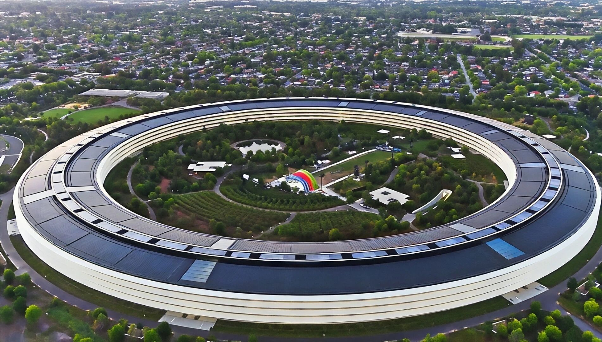

Apple Park 苹果飞船总部大楼，是美国苹果公司新总部大楼，乔布斯生前所设计，位于美国加利福尼亚州库比蒂诺市。占地面积280万平方英尺（约合26万平方米）。该建筑耗时8年时间完工，总花费达50亿美元（约合330亿人民币）。乔布斯剧院处在环形总部大楼附近，专门用于举办发布会等重大活动，最多可容纳1.2万人，剧院的外观玻璃幕墙高20英尺（约6米），直径165英尺（约50.2米）。屋顶是有史以来最大的碳纤维独立屋顶，重达80吨，由44块面板组成。

新总部大楼为环状建筑，中间是大型庭院，用史蒂夫·乔布斯生前自己的话来形容，新大楼像"一艘着陆的宇宙飞船"，而美国媒体则将其比喻成"巨型玻璃甜甜圈"。